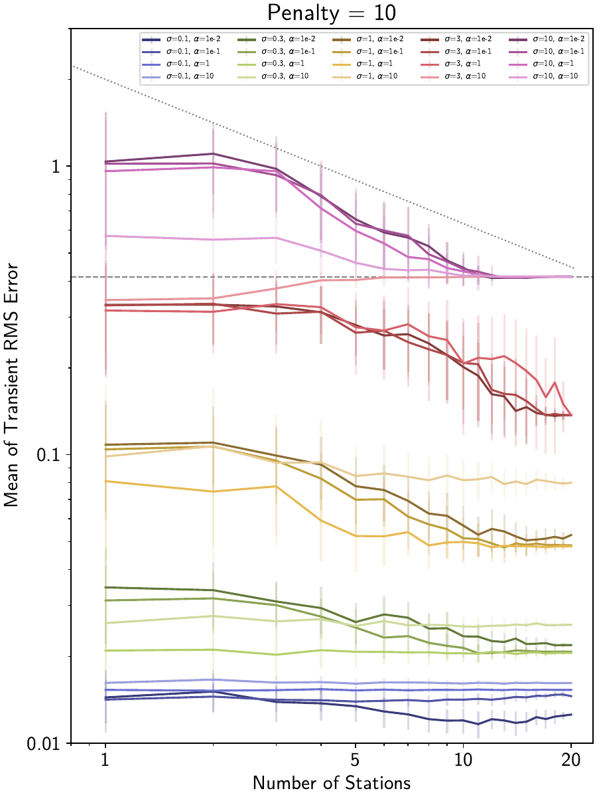

Tutorial 5: Signal Recovery at Low SNR
In Tutorial 3, we looked at how using the spatiotemporal, L0-regularized solver is able to better recover signals affected by noise, although we didn’t have time to explore how the reweighting hyperparameters affected the quality of the results. This tutorial will explore a bit more quantitatively how using more and more stations improves the recovery of a synthetic signal.
Note
The figures and numbers presented in this example no longer exactly match what is presented in [koehne23]. This is because significant code improvements to DISSTANS were introduced with version 2, and the effect of the hyperparameters changed. Care has been taken to recreate this example to match what is in the published study, although small quantitative changes remain. The qualitative interpretations are unchanged.
Preparations
By now, not every import needs to be explained, so I’ll just get those out of the way first:
>>> import os
>>> import pickle
>>> import numpy as np
>>> import matplotlib.pyplot as plt
>>> import pandas as pd
>>> from scipy.signal import detrend
>>> from scipy.special import binom
>>> from itertools import permutations, product
>>> from tqdm import tqdm
>>> import disstans
>>> from disstans import Network, Station, Timeseries
>>> from disstans.tools import parallelize
>>> from disstans.solvers import InverseReweighting
>>> from disstans.models import ISpline
Let’s create a random number generator, a network and a time vector:
>>> # random numbers
>>> rng = np.random.default_rng(0)
>>> # create random locations in a uniform square
>>> max_num_stations = 20
>>> station_names = [f"S{i:02d}" for i in range(1, max_num_stations + 1)]
>>> latlons = rng.uniform([-1, -1], [1, 1], (max_num_stations, 2))
>>> # create timevector
>>> t_start_str = "2000-01-01"
>>> t_end_str = "2001-01-01"
>>> timevector = pd.date_range(start=t_start_str, end=t_end_str, freq="1D")
The last important thing we need is a simple signal we want to recover, and
a noise realization that is affecting the recovery. For the signal, we are going
to have a simple transient rise-and-fall, which we will define parametrically
with a single ISpline object:
>>> # create an I-Spline model
>>> ispl = ISpline(degree=2, scale=367/20, t_reference=t_start_str,
... time_unit="D", num_splines=21)
>>> # add a reversing transient in the middle
>>> ispl_params = np.zeros(ispl.num_parameters)
>>> ispl_params[ispl.num_parameters//2-2] = 1
>>> ispl_params[ispl.num_parameters//2+2] = -1
>>> ispl.read_parameters(ispl_params)
>>> # create all true timeseries
>>> truth = ispl.evaluate(timevector)["fit"]
Finally, the noise will be normally-distributed, although we remove a linear trend before the actual estimation. This is because we want to have the simplest possible setup to be able to see the effect of estimating spatially-coherent transient splines as clearly as possible, without having to worry about other models:
>>> noise = detrend(rng.normal(scale=1, size=(truth.size, max_num_stations)), axis=0)
Defining the variables and hyperparameter space
So now that we have a network, a true signal shared by all stations, and a different noise realization for every station, what are the variables and hyperparameters we want to examine?
The first one is easy: we want to see the effect of increasing the number of stations
being used. At the base level, every station will be fitted with a purely local L0 fit
(iterative lasso_regression()). Then, we want to turn on the spatial
awareness by using spatialfit() - first only considering
pairs of two stations, then triplets of three stations, and so forth, and at the end,
using all stations available.
Of course, if we have a network of, for example, 20 stations, there’s many ways to select “subnetworks” of two, three or four stations. And, because of the different noise realizations at each station, the resulting fits will also be different. So, we’ll have to sample from the big network a couple of times, make fits each time, and then calculate a mean and standard deviation to get a better understanding of our results for each number of stations involved in the solution process.
The hyperparameters we care about are the following:
The noise standard deviation,
The initial
penaltyparameter (forlasso_regression()andspatialfit()), andThe
scaleof the reweighting function (here, we will use theInverseReweightingfunction witheps=1e-4).
Of course, other things could be of interest - a different functional form for the reweighting function, or different shapes of true signal, etc., but we’ll focus on those for now. Here is the suite of parameters we want to consider:
>>> num_samples = 50
>>> noise_sds = ["0.1", "0.3", "1", "3", "10"]
>>> penalties = ["1", "10", "30"]
>>> rw_func_scales = ["1e-2", "1e-1", "1", "10"]
Running test cases
It becomes clear that this is best done in parallel, given the sheer number of hyperparameter combinations, not to mention that we have to do each combination a number of times with different station subsets to get a statistically valid result. To do this in parallel, it’s necessary to write functions that can then be called by the individual processes. There’s a lot of bookkeeping involved as well, and so we’re not going to go through all the code here; just refer to the linked code file at the top of this page.
The key is that for each combination of noise standard deviation, penalty, and reweighting
function scale parameters, we perform a spatialfit() for
each number of stations (from two to whatever the maximum number is). For each of these
cases, we sample multiple possible subnets. For example if we have stations with numbers
1 through 10, and wanted to test the performance of when we use three of those stations,
our subnetwork samples would look like triplets like (1, 2, 3), (1, 5, 10), etc.
If all stations are used, then there is of course just a single possible combination of
all stations, and if we only use one station at a time, we would use the regular
fit().
Then, for each fitted subnetwork, we compute the root-mean-squared error (RMSE) of the transient signal for every station, and then take the mean of all those RMSEs. We can then use all the different subnetworks to calculate the mean of those mean-RMSEs, and the standard deviation of that. Finally, we can plot this mean and standard deviation of the mean RMSE for all different number of stations.
Results
When we then plot all of the different cases in one big plot, we can see the big picture:
Here for example, we compare, for an initial penalty parameter of 10, the effect that different noise standard deviations (lines of different colors) and reweighting function scales (lines of different shading) have. Two auxiliary lines are also plotted: a general \(1/\sqrt{N}\) curve (since that is the expected behavior when more and more stations are added, dotted line), and the mean RMSE we get if we don’t fit any transient function at all (anything above it is therefore overfitting, dashed line).
We can observe the following things:
Adding the information of more and more stations follows approximately the expected \(1/\sqrt{N}\) shape, leading to lower mean RMSEs.
Compared to only local L0-regularized fits, solutions that take advantage of spatial coherence can obtain lower RMSEs, and provide more robust estimates (less variance in the RMSE).
Spatial reweighting can decrease the RMSE in this particular example by about half an order of magnitude. Put the other way around, spatial reweighting reaches the same RMSE as a local solution with higher signal-to-noise-ratio.
If the noise is too high to recover any signal, spatial reweighting does not lead to overfitting as long as enough stations are used.
If the wrong reweighting function scale is used (in this case, too small scales, i.e., weak regularization), spatially-aware fitting at worst makes all stations converge to a common “wrong” fit (compared to wide variance of RMSEs at each station when fit individually).